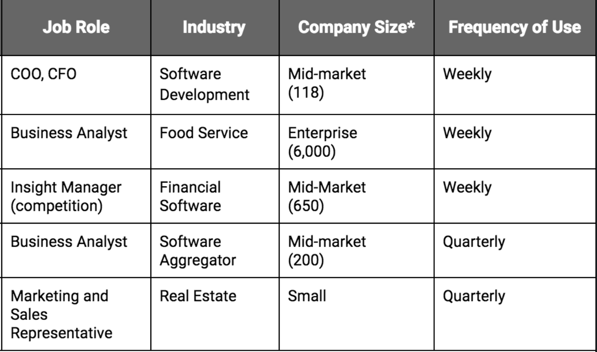

An Usability Evaluation of G2 Crowd's customer facing website
To evaluate G2 Crowd's website for usability issues and provide actionable recommendations to improve the User Experience and Business
G2 Crowd is a four-year-old startup based in Chicago, offering business software reviews globally and currently has approximately 150,000 user reviews and nearly 800,000 user visits per month
A variety of methods such as Interaction maps, Interviews, Surveys, Heuristics and Usability testing were conducted with a wide set of users
This was a group project with me contributing in every step from start to finish.
The goal of creating the interaction map is to explore the website and understand the scope and experience of using the website. Exploring the interaction map also exposed the various functionalities that the website offers.
The value of doing this activity is to map out the interaction flow between different functionalitites within the website and to get a glimpse of the user experience offered by the website from a user's point of view.
Interviewees were recruited with the help of G2 Crowd. G2 Crowd maintains a list of users who have indicated interest in participating in occasional user research projects related to G2 Crowd’s website, and all interviewees came from this list.

A 29-question survey was conducted from March 9 - March 14, 2017 among 1,098 users of G2 Crowd’s website. The survey was created using Qualtrics software.
Our target population for the survey consisted of users of G2 Crowd’s website who had recently visited the site. Survey participants were recruited by G2 Crowd via email, and were chosen because they had recently submitted questions to software vendors using G2 Crowd’s website. Three separate groups of participants were contacted on three different stages.
We identified few of the key findings from our surveys.
For this, we evaluated a list of competitiors and grouped them into direct, indirect, analogous, partial and parallel competitors. We then compared the different features offered by all the competitors and compared it agains that of G2 Crowd.
The following is a list of findings that was observed from the comparative evaluation of the competitor’s products.
Our objective for this task was to evaluate G2 Crowd’s website using Nielsen’s Usability Heuristics and identify potential usability issues in the website.
Our primary goals for the usability testings were to answer the following questions:
An overview of all the findings and recommendation at various steps of the process is documented in the form of a video and was presented to the client. The video can be accessed below.
G2 Crowd has already fixed most of our findings with the suggested recommendation. As for the next steps, the client will resolve the other usability issues with the suggested recommendation.
G2 Crowd's website with one of our key findings being fixed (Add to Compare feature)
Using Human-Centered Design to better integrate privacy in smart speakers such as Amazon Echo and Google Home.
A Civic Tech mobile application design with an aim to curb sexual harassment of women in India by leveraging social network connections
A group Project visualizing Hate Crimes across the United States from 2013-2016 created using d3.js
My personal collection of digital design work which includes Posters, Logos, Personal Branding, etc